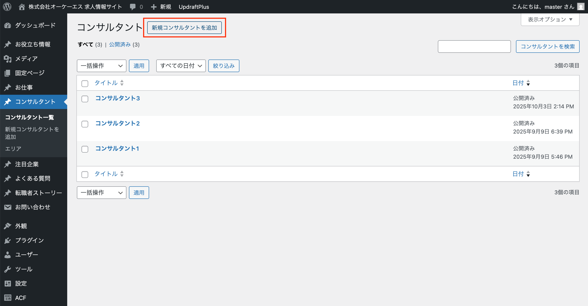
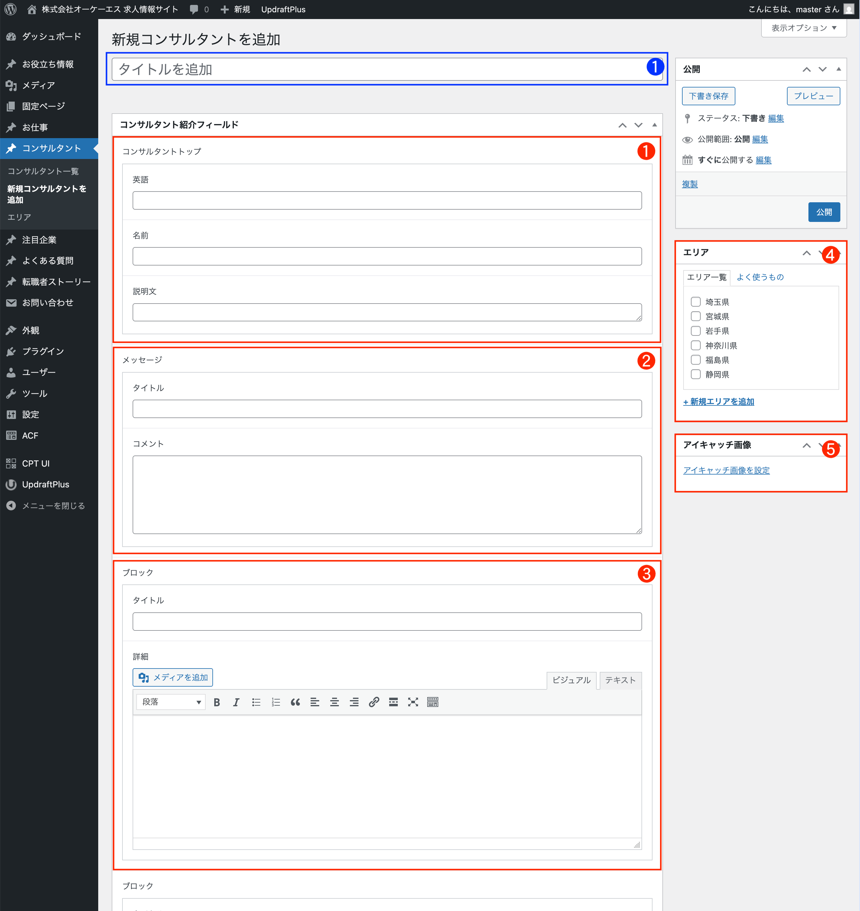
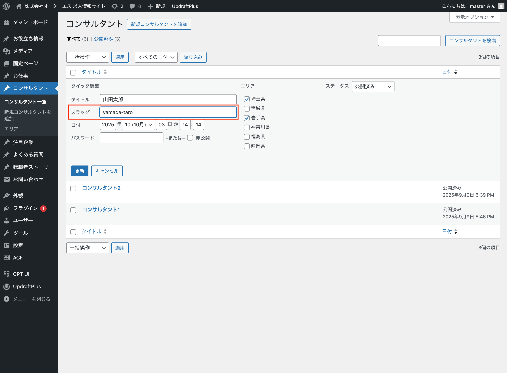

編集メニュー
コンサルタント

1 サイドナビ「コンサルタント」→「新規コンサルタントを追加」をクリック

左側のメニューから「コンサルタント」をクリックします。
ページ上部「新規コンサルタントを追加」をクリックしてください。
※権限がない場合は管理者にお問い合わせください。
2 コンサルタントの内容を入力
❶：編集用タイトル
フロントには表示されない編集用タイトルです。
❶：コンサルタントトップ
コンサルタントの概要を入力。詳細ページ・一覧ページに表示されます。
❷：メッセージ
コンサルタントのメッセージを入力。詳細ページに表示されます。
❸：ブロック 1〜6
コンサルタントの詳細を入力。詳細ページに表示されます。
注意: ブロックは6ブロックまで設定可能です。
❹：エリア選択
コンサルタントの対応エリアを選択。詳細ページ・一覧ページに表示されます。
新規エリアを追加でエリア追加も可能です。
❺：アイキャッチ画像
コンサルタントのアイキャッチ設定。詳細ページ・一覧ページに表示されます。
3 スラッグ（公開URL）を入力
スラッグを入力
一覧から該当の「クイック編集」をクリックしスラッグ（公開URL）に英語半角文字列を入力してください。
入力後、「更新ボタン」をクリックすると反映されます。
公開URL：/consultant/yamada-taro/
注意:
新規作成時には詳細ページ内にスラッグ入力は表示されません。
新規作成後、一覧に戻って入力してください。
注意: 英語大文字は小文字に自動で変換されて表示されます。
注意:
スラッグは一意である必要があります。
すでにある文字列を入力した場合、xxxx-01のように連番が自動で追加されます。